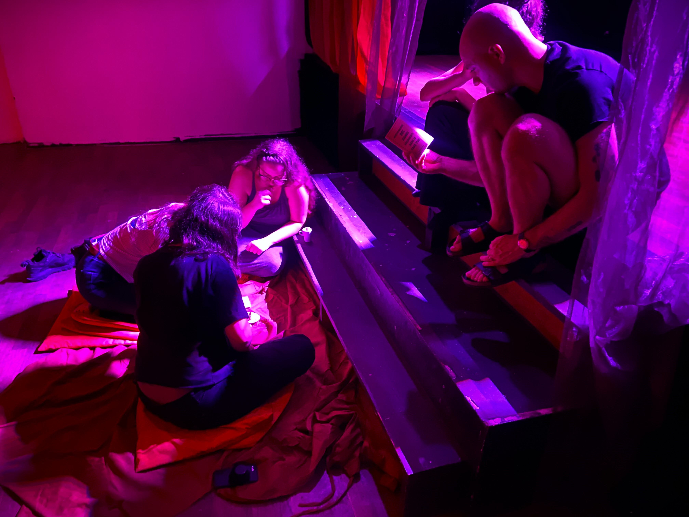
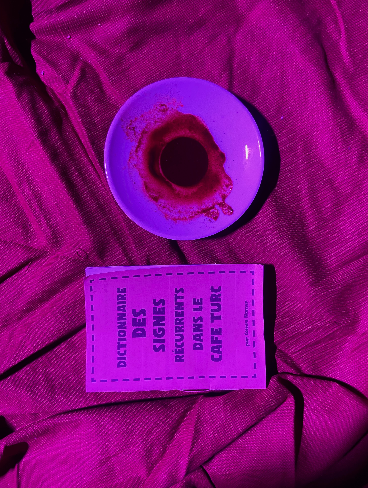
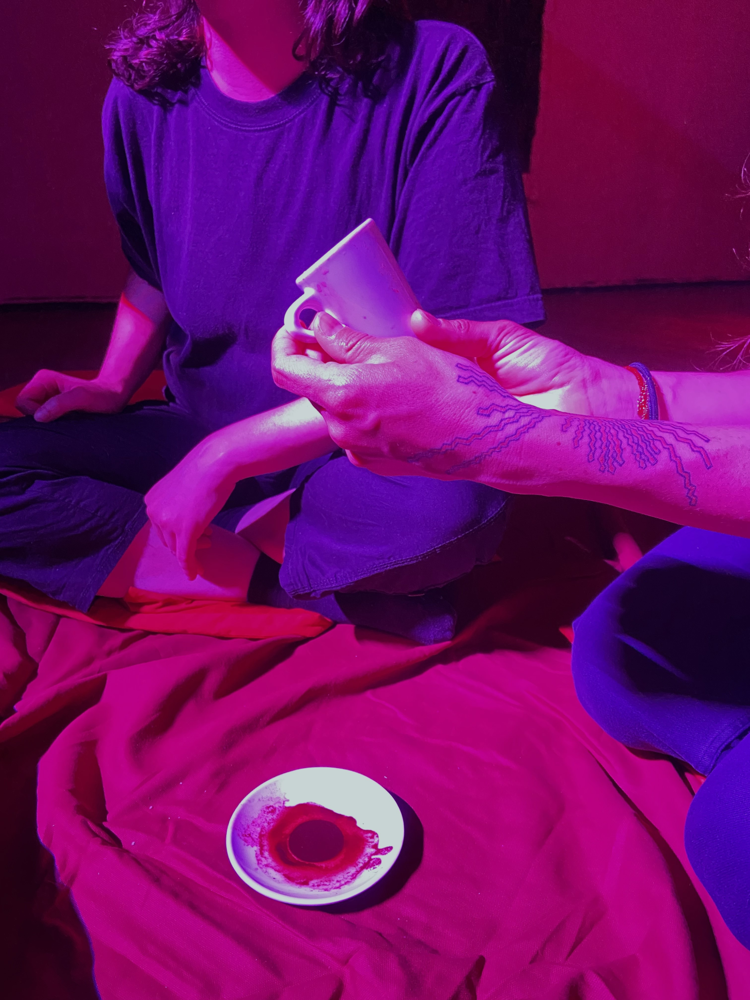
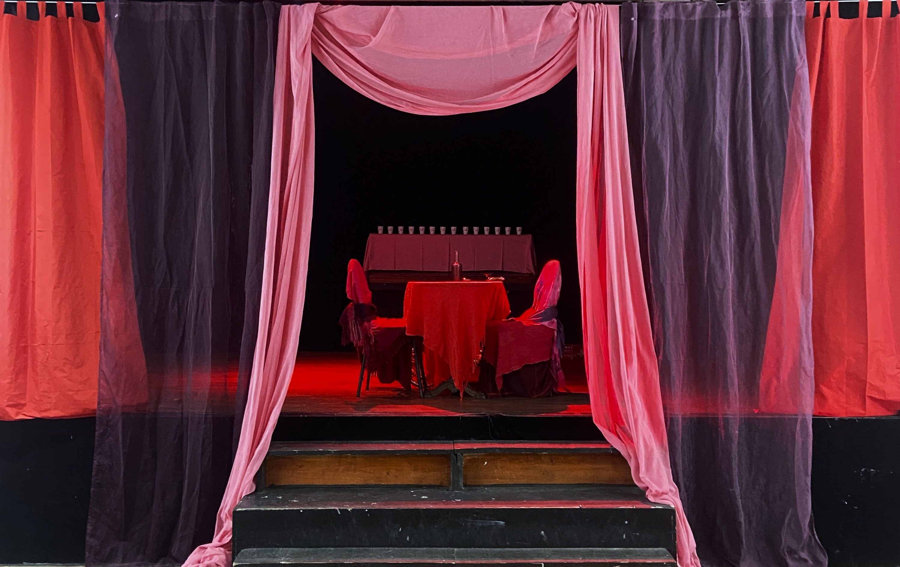

In En Avoir Marc du Futur (Which is a play on words, with "Marc" being a mark, and "En avoir marre" being "To be fed up") the artist explores the intimate connection between tradition, memory, and identity through the lens of Turkish coffee reading (cafédomancie). The exhibition takes visitors on a journey where the simple act of drinking coffee becomes a portal to self-reflection, community, and the unraveling of personal narratives.
The project consists of three parts ; The workshop, the performance and the participation.

THE WORKSHOP : "FUTUR RÉVÉLÉ DANS LE CAFÉ"
Participants begin by learning about the roots of the Turkish coffee, where it grows, how it is different from the ground coffee we drink in our daily lives, where the coffee reading practice started, and the method of preparing Turkish coffee. Guided by the artist's instructions , they are taught step-by-step how to brew the coffee, focusing on the importance of intention.
Once the coffee is made and enjoyed together with the artist, the grounds at the bottom of the cup become the medium for interpretation. At this stage, participants turn to the artist’s Dictionnaire des Signes Récurrents dans le Café Turc, a handbook written by the artist specifically for this project, that details common symbols found in coffee readings and their potential meanings. From animals to objects and abstract forms, the dictionary serves as a guide to navigate through the world of marks left in the coffee cup.
Working in pairs, sometimes with the intervention of the artist, each and every participant gets their cup read, and gives a reading. This also forms conversations between participants that have maybe yet to know eachother.

THE PERFORMANCE
After the completion of the period for the workshops, the artist changes the installation of the scene; the supplementary chairs and cushions on the floor are now gone. The only surface is the table in the middle of the scene, and there are now two chairs, of which one is occuppied by the artist.
This time, the artist invites the participants to come and directly establish a connection with herself. She prepares the Turkish coffee and offers readings to the participant(s).
THE PARTICIPATION
When the artist is no more in-situ, the exhibition encourages direct audience engagement through an interactive component. A QR code provides step-by-step instructions on preparing Turkish coffee, inviting visitors to take part in a self-guided performance. Using the artist’s Dictionnaire des Signes Récurrents dans le Café Turc, participants are prompted to prepare and interpret their own coffee cups, merging the traditional practice of coffee reading with the contemporary art experience. This hands-on activity allows visitors to explore how their interpretations of the coffee grounds are shaped by their own personal contexts.


En Avoir Marc du Futur transforms everyday rituals into art, offering a space for reflection on the subtle meanings that emerge from the ordinary. The exhibition encourages viewers to discover hidden connections and reminds us that even the smallest details—like a pattern in coffee grounds—can reveal a world of meaning waiting to be conversed.